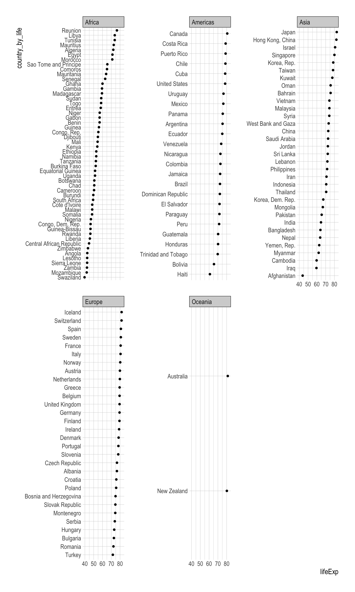
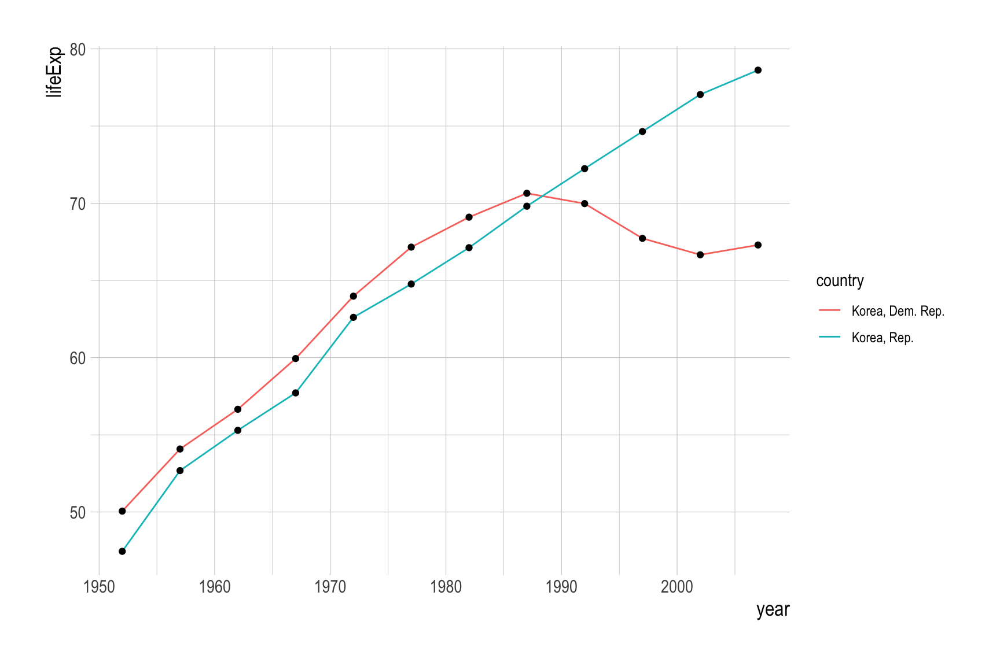
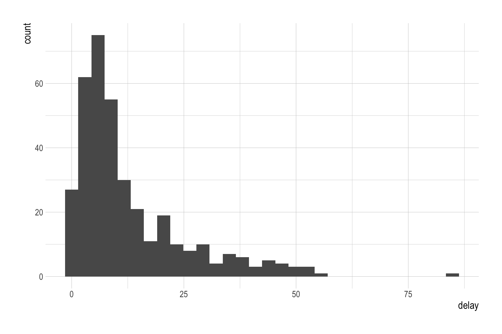

# install.packages("gapminder")
library(gapminder)
gapminder <- gapminder::gapminderNote 21
mutate() / group_by() / summarize()
Classwork 10 - Q2f
Provide the R code to create a dotplot that displays the values of country, sorted by lifeExp within each continent for the year 2007.
gapminder_2007 <- gapminder |>
filter(year == 2007)
length( unique(gapminder_2007$country) )[1] 142gapminder_2007 <- gapminder_2007 |>
mutate(country_by_life = fct_reorder(country,
lifeExp))
# gapminder_2007$country_by_lifeggplot(gapminder_2007,
aes(x = lifeExp,
y = country_by_life)) +
geom_point() +
facet_wrap(continent ~ .,
scales = "free_y")
Q2g
Provide the R code to describe a time trend of lifeExp for both North Korea and South Korea in one ggplot figure.
korea <- gapminder |>
filter(str_detect(country, "Korea"))
korea2 <- gapminder |>
filter(country %in% c("Korea, Dem. Rep.", "Korea, Rep."))ggplot(korea, aes(x = year, y = lifeExp)) +
geom_line(aes(color = country)) +
geom_point()
summarize()
df <- data.frame( x = c(1:10) )
df_sum <- df |>
summarize(x_mean = mean(x),
x_sd = sd(x),
x_mean = mean(x),
x_min = min(x),
x_q1 = quantile(x, prob = .25),
x_median = median(x),
x_q3 = quantile(x, prob = .75),
x_max = max(x)
)
df_mutate <- df |>
mutate(x_mean = mean(x),
x_sd = sd(x),
x_mean = mean(x),
x_min = min(x),
x_q1 = quantile(x, prob = .25),
x_median = median(x),
x_q3 = quantile(x, prob = .75),
x_max = max(x)
)df <- data.frame(
group = c("A", "B", "A", "B"),
score = c(50, 65, 70, 85)
)
df group score
1 A 50
2 B 65
3 A 70
4 B 85df |>
group_by(group)# A tibble: 4 × 2
# Groups: group [2]
group score
<chr> <dbl>
1 A 50
2 B 65
3 A 70
4 B 85df_sum <- df |>
group_by(group) |>
summarize(score_mean = mean(score))library(nycflights13)
df_dep_delay <- flights |>
summarise(dep_delay_mean = mean(dep_delay),
dep_delay_mean_rmNA = mean(dep_delay, na.rm = T),
)
library(skimr)
skim(flights$dep_delay)| Name | flights$dep_delay |
| Number of rows | 336776 |
| Number of columns | 1 |
| _______________________ | |
| Column type frequency: | |
| numeric | 1 |
| ________________________ | |
| Group variables | None |
Variable type: numeric
| skim_variable | n_missing | complete_rate | mean | sd | p0 | p25 | p50 | p75 | p100 | hist |
|---|---|---|---|---|---|---|---|---|---|---|
| data | 8255 | 0.98 | 12.64 | 40.21 | -43 | -5 | -2 | 11 | 1301 | ▇▁▁▁▁ |
by_day <- flights |>
group_by(year, month, day) |>
summarise(delay = mean(dep_delay, na.rm = T)) |>
arrange(-delay)
ggplot(by_day) +
geom_histogram(aes(x = delay))
n()
df <- data.frame(
group = c("A", "B", "A", "B", "A"),
score = c(50, 65, 70, 85, NA) )
df_sum <- df |>
group_by(group) |>
summarize(
mean_val = mean(score, na.rm = T),
n = n() )Classwork 11
nyc_dogs <- read_csv('https://bcdanl.github.io/data/nyc_dogs_cleaned.csv')Q1a
Find the five most popular breeds.
q1a <- nyc_dogs |>
group_by(breed) |>
summarise(n = n()) q1a_count <- nyc_dogs |>
count(breed)q1a <- nyc_dogs |>
group_by(breed) |>
summarise(n = n()) |>
arrange(-n)Q1b
Provide both (1) ggplot code and (2) a simple comment to describe how the distribution of the five popular breeds varies by borough.
q1a_top5 <- q1a |>
filter(!is.na(breed)) |>
mutate(ranking = dense_rank(-n)) |>
filter(ranking <= 5)
q1b <- nyc_dogs |>
filter(breed %in% q1a_top5$breed)
# ggplot(q1b) + ...